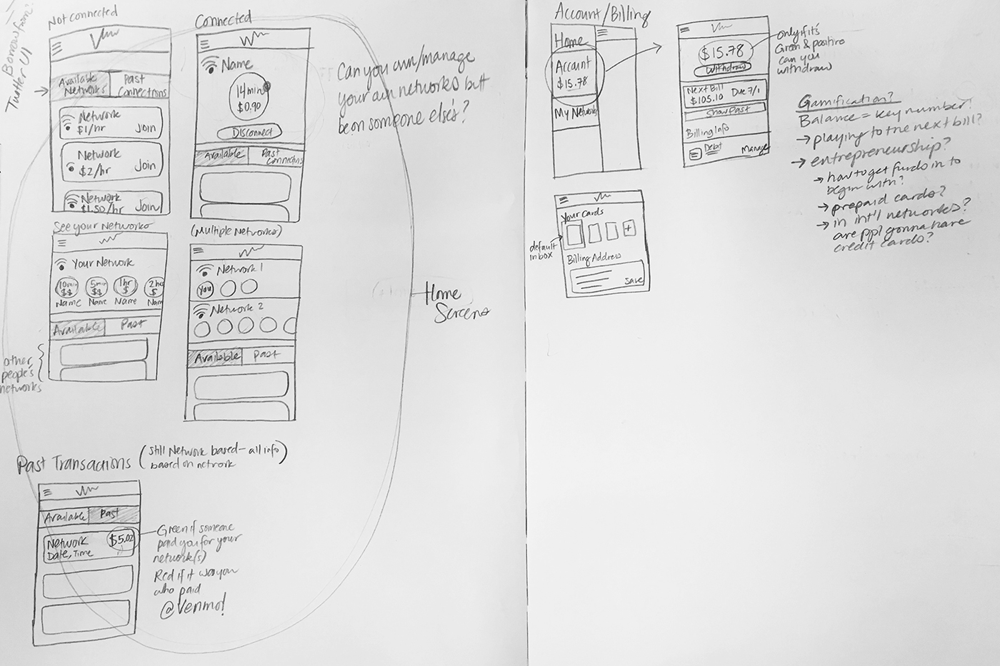
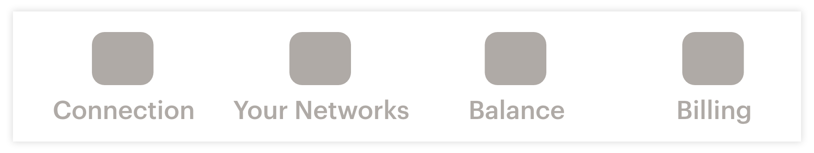
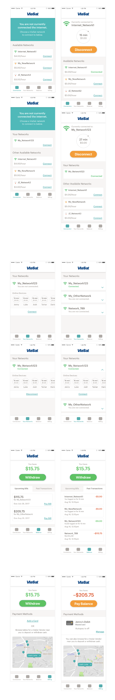
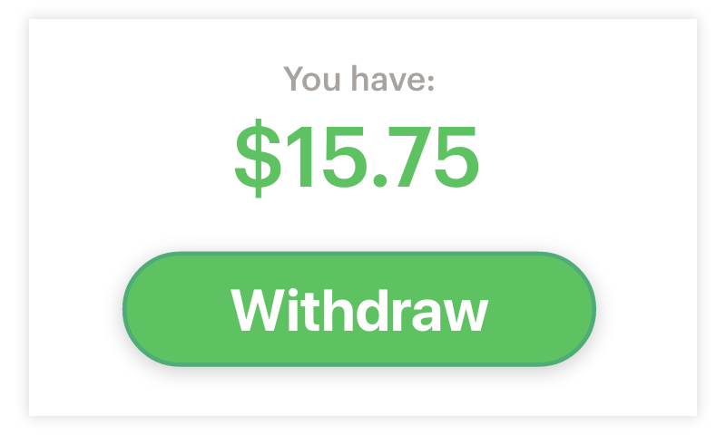

Future States: Village Wi-Fi Model
While working on the post-MVP mockups, I was curious to take the design a step further by seeing how modules we created could work in other contexts, including international "Village Wi-Fi" markets. Across contexts, I identified 2 roles:
Basic Users
Basic users, or guests, don’t own their own networks. They can only pay to connect to networks owned by others. They have the ability to open the app and see their current connected network, available networks, balance, and billing options.
Vendors
Vendors can also pay to connect to networks owned by others, but they also own their own Wi-Fi networks and have the option to sell connection to them. They receive a startup kit with their dish setup and a system to deposit and withdraw cash*.

Here's a breakdown of a reimagined information architecture for these services:

- CONNECTION: Current connection, Available networks
- YOUR NETWORKS: Current networks you own
- BALANCE: Balance, Upcoming bills, Past transactions
- BILLING: Balance, Payment Methods
Billing would work similarly to how I've imagined it for 1.1. However, the system would borrow from the Venmo and Uber model where the current balance can be added to and subtracted from in app, allowing users to interact in an internal economy.

Connections
This homepage will always display two modules: current connection status, and available networks. If you own your own network, it will display above all other available networks. On this page, you have the option to connecting to any available network, whether you're a basic user or a vendor.
Your Networks
This page displays the networks you own. Ideally, it features all online guests on each network and allow you to toggle settings for each guest. It will also give you more information regarding network management (dish location, network capacity, network hourly rate).
Balance
In addition to seeing your balance and potential action steps of paying it off or withdrawing, this page displays all interactions with your balance. It will show upcoming bills (what may need to come out of your balance), and past transactions (a history of what has altered your balance).
Billing
Mainly, I have considered the payment method to be by card, as that is how MVP and 1.1 will be done. In foreign contexts, prepaid solutions (discussed below) might be easier. As an introduction to how that might work, Vendors may also be able to help users deposit and withdraw cash at their physical location.
*A Prepaid System
My last consideration for the Village Wi-Fi system is how to get money into this internal economy.

In addition to managing their own networks, Vendors could potentially allow users to deposit and withdraw cash from their physical locations. Users can approach any vendor to fill their account with money and use that to pay for network usage in the ViaSat community by the hour. Likewise, users can visit Vendors to withdraw any positive balance they have in their account.
We may also consider an in-experience currency too: I thought about using data itself as the currency. Instead of paying an hourly rate, users would pay for their usage by GB. If they want to deposit into their ViaSat account, they would pay for GB with real money through a Vendor. GB in the app would convert into cash in the case of withdrawal.
Conclusion
In every context, including residential, maritime, in-flight, and actual “village” communities, this Village Wi-Fi model can be executed. In homes, the kit user would be whoever typically manages the internet services, and these users can choose to resell or keep their network private. Users in the home, including family and guests, would be the basic users in this situation, having the ability only to hop onto the network. This scenario can be replicated for yachts and planes.
An internal community of satellite internet users can flex across many situations with the Village Wi-Fi system. As we enter new markets, this is one internet paradigm we can define.